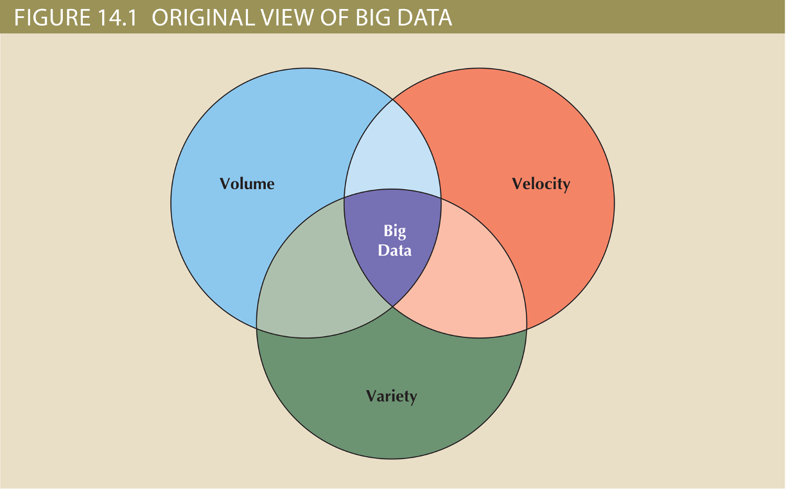
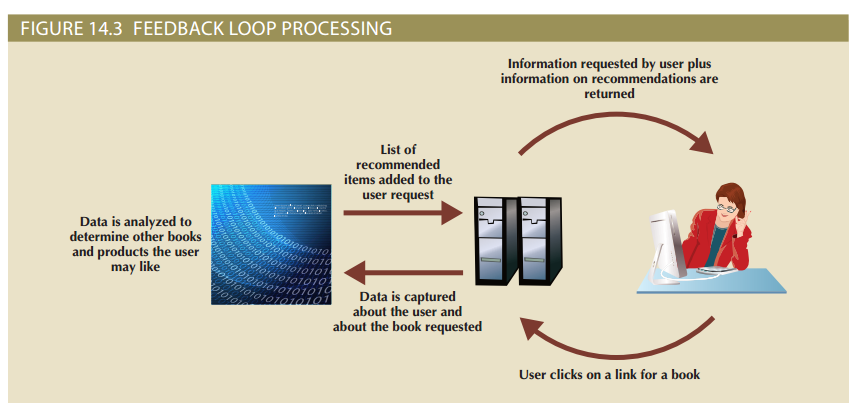
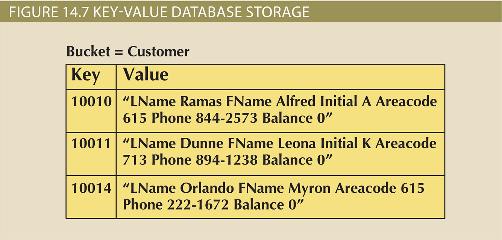
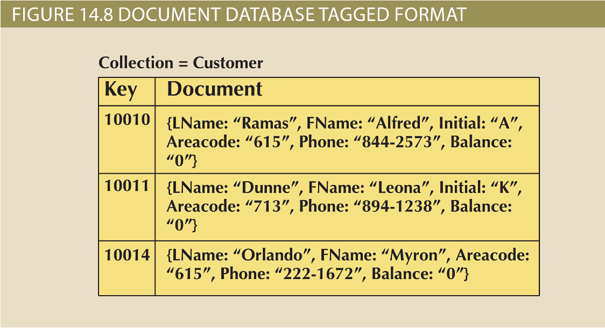
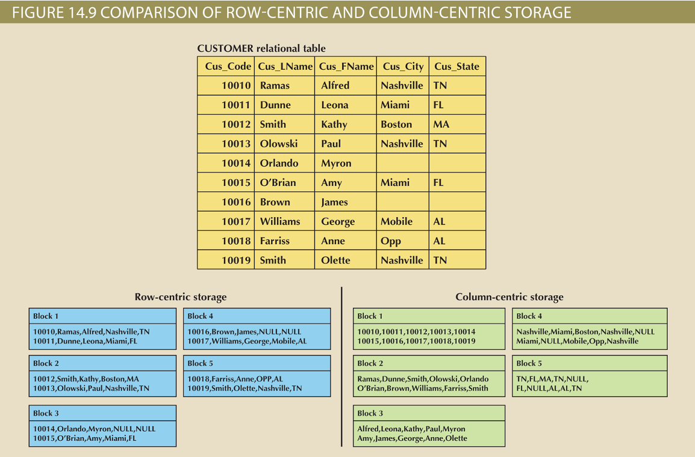
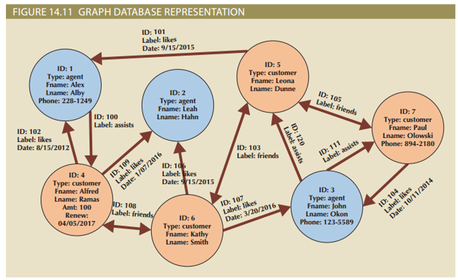
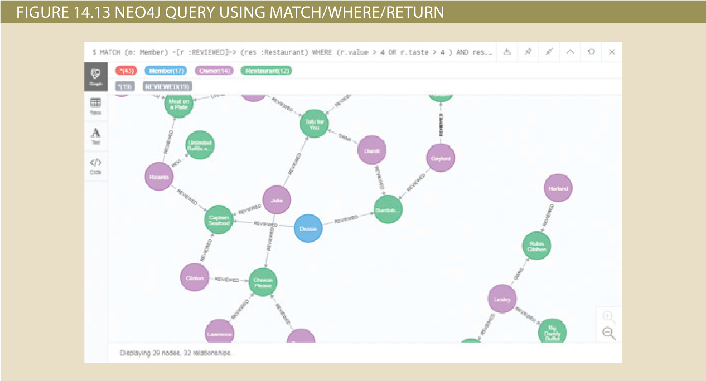

Big Data and NoSQL
Big Data and NoSQL¶
-
Learning Objectives
-
Explain the role of Big Data in modern business
- Describe the primary characteristics of Big Data and how these go beyond the traditional “3 Vs”
- Explain how the core components of the Hadoop framework operate
- Identify the major components of the Hadoop ecosystem
- Summarize the four major approaches of the NoSQL data model and how they differ from the relational model
- Describe the characteristics of NewSQL databases
- Understand how to work with document databases using MongoDB
- Understand how to work with graph databases using Neo4j
Big Data¶
- Volume: quantity of data to be stored
- Scaling up: keeping the same number of systems but migrating each one to a larger system
- Scaling out: when the workload exceeds server capacity, it is spread out across a number of servers
- Velocity: speed at which data is entered into system and must be processed
- Stream processing: focuses on input processing and requires analysis of data stream as it enters the system
- Feedback loop processing: analysis of data to produce actionable results
- Variety: variations in the structure of data to be stored
- Structured data: fits into a predefined data model
- Unstructured data: does not fit into a predefined model
- 
- 
- Other characteristics
- Variability: changes in meaning of data based on context
- Sentimental analysis: attempts to determine if a statement conveys a positive, negative, or neutral attitude about a topic
- Veracity: trustworthiness of data
- Value: degree data can be analyzed for meaningful insight
- Visualization: ability to graphically resent data to make it understandable
- Relational databases are not necessarily the best for storing and managing all organizational data
- Polyglot persistence: coexistence of a variety of data storage and management technologies within an organization’s infrastructure
{kind=link}
{kind=link}
Hadoop¶
- De facto standard for most Big Data storage and processing
- Java-based framework for distributing and processing very large data sets across clusters of computers
- Important components
- Hadoop Distributed File System (HDFS): low-level distributed file processing system that can be used directly for data storage
- MapReduce: programming model that supports processing large data sets
Hadoop Components¶
-
Hadoop Distributed File System (HDFS)
- Based on several key assumptions
- High volume: default block sizes is 64 MB and can be configured to even larger values
- Write-once, read-many: model simplifies concurrency issues and improves data throughput
- Streaming access: optimized for batch processing of entire files as a continuous stream of data
- Fault tolerance: designed to replicate data across many different devices so that when one fails, data is still available from another device
- Based on several key assumptions
-
Hadoop uses several types of nodes; computers that perform one or more types of tasks within the system
- Data node store the actual file data
- Name node contains file system metadata
- Client node makes requests to the file system as needed to support user applications
- Data node communicates with name node and sends back block reports and heartbeats*
-
MapReduce
- Framework used to process large data sets across clusters
- Breaks down complex tasks into smaller subtasks, performing the subtasks, and producing a final result
- Map function takes a collection of data and sorts and filters it into a set of key-value pairs
- Mapper program performs the map function
- Reduce summaries results of map function produce a single result
- Reducer program performs the reduce function
- Implementation complements HDFS structure
- Job tracker: central control program
- Task tracker: reduces tasks on a node
- Batch processing: runs tasks from beginning to end with no user interaction
- Framework used to process large data sets across clusters
{kind=link}
Hadoop ecosystem¶
- Most organizations that use Hadoop also use a set of other related products that interact and complement each other to produce an entire ecosystem of applications and tools
-
Like any ecosystem, the interconnected pieces are constantly evolving and their relationships are changing, so it is a rather fluid situation
- Map reduce simplification applications
- Hive: data warehousing system that sites on top of HDFS and supports its own SQL-like language
- Pig: tool that compiles a high-level scripting language, named Pig Latin, into MapReduce jobs for executing in Hadoop
- Data ingestion applications
- Flume: component for ingesting data in Hadoop
- Sqoop: tool for converting data back and forth between a relational database and the HDFS
- Direct query applications
- Hbase: column-oriented NoSQL database designed to sit on top of the HDFS that quickly processes sparse datasets
- Impala: the first SQL on Hadoop application
{kind=link}
NoSQL¶
- Nosql: non-relational database technologies developed to address Big Data challenges
- Name does not describe what the NoSQL technologies are, but rather what they are not (poor job of that as well)
- Key-value (KV) databases: conceptually the simplest of the NoSQL data models
- Store data as a collection of key-value pairs organized as buckets which are the equivalent of tables
- Document databases: similar to key-value databases and can almost be considered a subtype of KV databases
- Store data in key-value pairs in which the value components are encoded documents grouped into large groups called collections
- 
- 
- Column-oriented databases refers to two technologies
- Column-centric storage: data stored in blocks which hold data from a single column across many rows
- Row-centric storage: data stored in block which hold data from all columns of a given set of rows
- 
- Graph databases store data on relationship-rich data as a collection of nodes and edges
- Properties: like attributes; they are the data that we need to store about the node
- Traversal: query in a graph database
- 
{kind=link}
{kind=link}
{kind=link}
{kind=link}
Aggregate awareness¶
1 2 3 4 | |
NewSQL Databases¶
- Database model that attempts to provide ACID-compliant transactions across a highly distributed infrastructure
- ACID
- Fully transactional
- Data is validated before written to DB
- All or nothing write rules
- Latest technologies to appear in the data management area to address Big Data problems
- No proven track record
- Have been adopted by relatively few organizations
- ACID
NewSQL databases support:¶
- SQL as the primary interface
- ACID-compliant transactions
- Similar to NoSQL, NewSQL databases also support:
- Highly distributed clusters
- Key-value or column-oriented data stores
Working with Document Databases Using MongoDB¶
- Popular document database
- Among the NoSQL databases currently available, MongoDB has been one of the most successful in penetrating the database market
- MongoDB, comes from the word humongous as its developers intended their new product to support extremely large data sets
- High availability
- High scalability
- High performance
Importing Documents in MongoDB¶
- Refer to the text for an importation example and considerations
Example of a MongoDB Query Using find()¶
- Methods are programed functions to manipulate objects
- Find() method retrieves objects from a collection that match the restrictions provided
- Pretty() method is used to improve readability of the documents by placing key:value pairs on separate lines
- Refer to the text for a query example
Working with Graph Databases Using Neo4j¶
- Even though Neo4j is not yet as widely adopted as MongoDB, it has been one of the fastest growing NoSQL databases
- Graph databases still work with concepts similar to entities and relationships
- Focus is on the relationships
- Graph databases are used in environments with complex relationships among entities
- Heavily reliant on interdependence among their data
- Neo4j provides several interface options
- Designed with Java programming in mind
- Graph databases still work with concepts similar to entities and relationships
Creating nodes in Neo4j¶
- Nodes in a graph database correspond to entity instances in a relational database
- Cypher is the interactive, declarative query language in Neo4j
- Nodes and relationships are created using a CREATE command
- Refer to the text for examples
- Using the CREATE command to create a member node
- Retrieving node data with MATCH and WHERE
- Retrieving relationship data with MATCH and WHERE
- 
{kind=link}